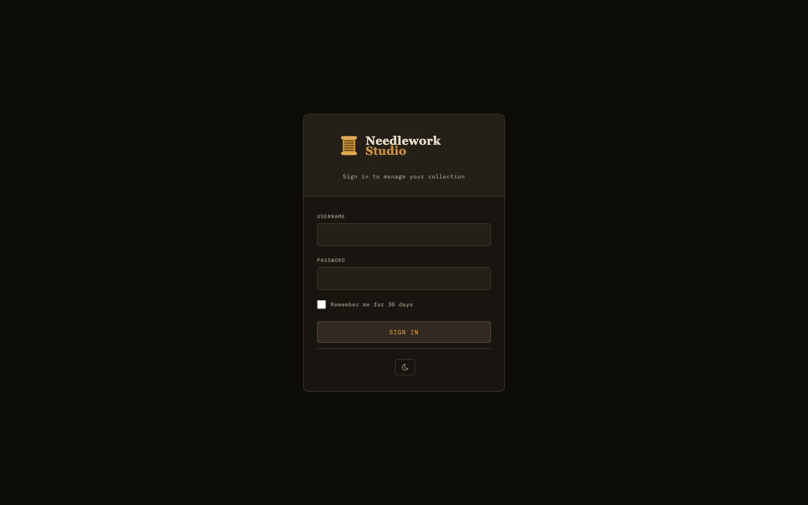

Installation
Install Needlework Studio as a desktop application, a Docker container, or a manual Python deployment.

The Needlework Studio login screen
System Requirements
- macOS — macOS 11 (Big Sur) or later. Available for both Apple Silicon and Intel processors.
- Windows — Windows 10 or later (64-bit).
- Linux — Ubuntu 20.04, Debian 11, or equivalent (64-bit). Available as AppImage (universal) and .deb package.
- Docker — Any system running Docker Engine 20.10 or later.
- Manual Setup — Python 3.10 or newer.
Desktop App
Pre-built desktop installers are available on the GitHub Releases page. Download the appropriate package for your operating system:
- macOS (Apple Silicon) -
.dmgdisk image (ARM64). For M1/M2/M3/M4 Macs. Open the DMG and drag Needlework Studio into your Applications folder. - macOS (Intel) -
.dmgdisk image (x64). For older Intel-based Macs. Open the DMG and drag Needlework Studio into your Applications folder. - Windows -
.exeinstaller. Run the installer and follow the on-screen prompts. - Linux -
.AppImageportable executable. Mark the file as executable (chmod +x) and run it directly. - Linux (.deb) -
.debpackage for Debian and Ubuntu. Install withsudo apt install ./needlework-studio_*.deb.
macOS Gatekeeper
Because the macOS build is not signed with an Apple Developer certificate, Gatekeeper will block the first launch. To open the app:
- Right-click (or Control-click) the Needlework Studio application in Finder.
- Select Open from the context menu.
- In the confirmation dialog, click Open again.
You only need to do this once. After the first launch macOS will remember your choice and the app will open normally.
Local Data Storage
The desktop app stores all data locally on your machine. It works fully offline with no server or internet connection required. Your thread inventory, patterns, and project data are kept in the application's data directory on disk.
Docker
Docker is the recommended way to self-host Needlework Studio. A single container runs the full application with persistent data stored in a Docker volume.
Quick Start
Pull the latest image from the GitHub Container Registry:
docker pull ghcr.io/greenglasst/needleworkstudio:latestDocker Compose
Create a docker-compose.yml file with the following configuration:
services:
needlework-studio:
image: ghcr.io/greenglasst/needleworkstudio:latest
ports:
- "6969:6969"
volumes:
- needlework-data:/data
restart: unless-stopped
volumes:
needlework-data:Start the container:
docker compose up -dCreate Your First User
After starting the container, create an initial user account with the built-in management script:
docker compose exec needlework-studio python3 manage_users.py createFollow the interactive prompts to set a username and password. Once created, open http://localhost:6969 in your browser and log in.
Manual Python Setup
If you prefer to run Needlework Studio directly on a host machine without Docker, you can set it up manually with Python.
Prerequisites
- Python 3.10 or newer - verify with
python3 --version. - pip - the Python package installer (usually bundled with Python).
Clone and Install
Clone the repository and set up a virtual environment:
git clone https://github.com/GreenglassT/NeedleworkStudio.git
cd NeedleworkStudio
python3 -m venv venv
source venv/bin/activate
pip install -r requirements.txtInitialize the Database
Run the database initialization script to create all tables and seed the thread library:
python3 init_db.pyThis seeds the database with 744 DMC threads and over 400 Anchor threads, giving you a complete reference library out of the box.
init_db.py drops and recreates the entire database. Only run this for first-time setup or if you need a full reset. Running it on an existing installation will permanently delete all user data, patterns, and inventory.
Create a User
Create your first user account:
python3 manage_users.py createRun the Application
For development or local testing, start the application directly with Python:
python3 app.pyThe application will be available at http://localhost:6969.
Production with Gunicorn
For production deployments, use Gunicorn as the WSGI server:
gunicorn -w 1 --threads 4 -b 0.0.0.0:6969 app:appImportant: You must use a single worker (-w 1). Needlework Studio uses an in-memory rate limiter that is not shared across processes. Running multiple workers would cause each worker to maintain its own independent rate-limit counters, making the rate limiting ineffective. The --threads 4 flag provides concurrency within that single worker to handle multiple simultaneous requests.